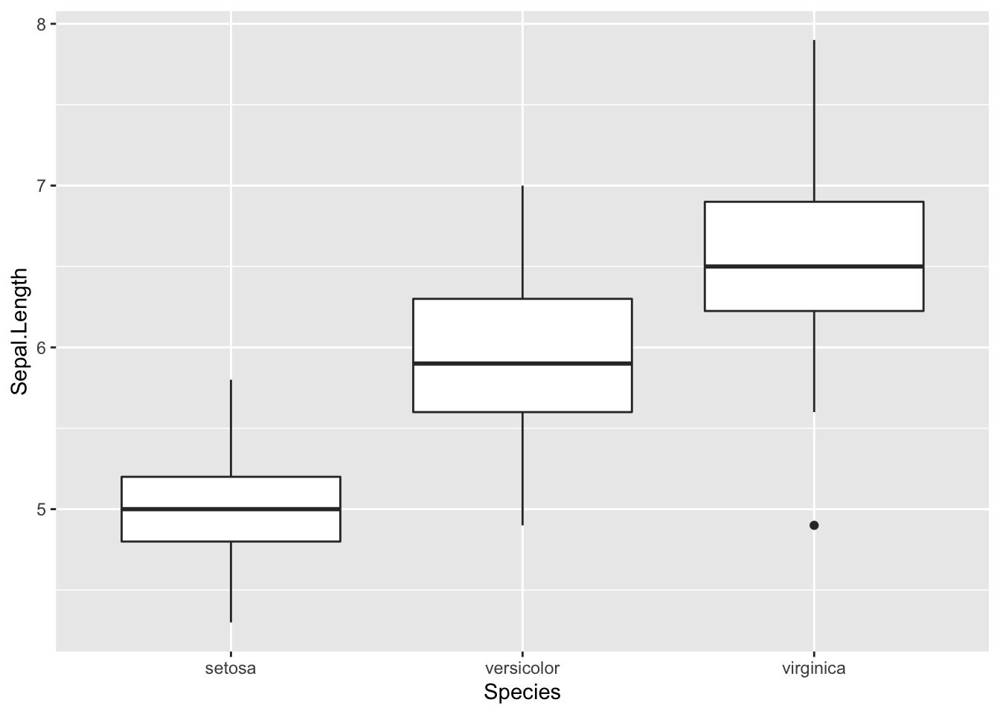
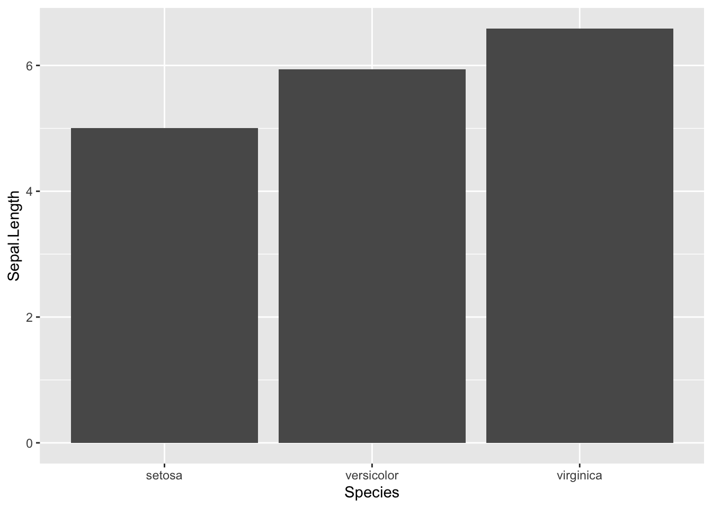

GGplot Graphing
Ben Miner and Matthew Zinkgraf
2022-09-21
Graphing packages
There are many additional packages to help you visualize data. However, there are two that are widely used. The package lattice comes with the base distribution and has been around for a while. The package ggplot2 is a newer package, and most people that are learning R find it easier to use. Both are very powerful, but we will focus on ggplot2 today.
1 ggplot2
The ggplot2 package has a bunch of functions that allow you to create just about any type of graph, and quickly create complex graphs. Today we will go over some of the basics with a few more advanced examples to illustrate what is possible with the package.
You need to install and load ggplot2. If you don’t remember how to do this, you can look at the lab about installing and loading packages.
## install.packages(ggplot2)
require(ggplot2)## Loading required package: ggplot2The way we create plots is a little different than what you have learned for the low- and high-level plotting functions in the base package. Below is a table with some general definitions of important terminology.
- Aesthetics
- These are the data associated with the plot. For example, what data.frame do you want to use, what variable do you want plotted on the x and y axis, what variable to want to represent some other aspect of the graph, like size or color of points.
- Geoms
- Specifies what you want to plot. There are geoms for just about anything you would likely plot. For example, there is a geom for points, another for lines, another for bars, etc.
- Statistics
- Specifies how the data should be summarized before they are plotted. For example, for a histogram the default statistic is to bin the data; for points the default statistic is identity, which means to just plot the raw data.
- Scales
- Specifies how to scale the data. For example, you can make the points on a graph differ in color or in size, and the colors or sizes are set by scales.
- Coordinate systems
- Specifies the numbers represented on the axes. You probably won’t need to change the cooridinate system. However, if you need to, then you can.
- Facets
- Specifies how to create multiple graphs from a dataset. For example, if you have many sites and want to create a graph of each site, then you can use facets.
- Themes
- Specifies the formating of a plot. For example, if you want to change the background color, the font, the size of the axis label, etc.
Now to create a plot with the function ggplot2(), R need to know the aesthetic, geom, statistic, scale, facet, and theme to use. However, there are excellent defaults so you typically need to specify only a few of these. At a minimum you need to give the aesthetic (aes), but often you will also specify a geom.
I recommend that you quickly look at the ggplot2 webpage to see some of the different options for each of these general groups.
2 Basic plot
Let’s start with a basic graph. The next few examples will introduce you to the basics of building plots with ggplot2. Basics plots are easy to create, and the code will look a lot like what you have learned to date. We will start with the function qplot(), which is short for quick plot. This function creates a plot that is a very similar to the function plot().
We will use the data found in the movies dataset that is the package ggplot2movies.
## install.packages(ggplot2movies)
require(ggplot2movies) #Don't forget that you have to install the package!## Loading required package: ggplot2moviesdata(movies)
str(movies)## tibble [58,788 × 24] (S3: tbl_df/tbl/data.frame)
## $ title : chr [1:58788] "$" "$1000 a Touchdown" "$21 a Day Once a Month" "$40,000" ...
## $ year : int [1:58788] 1971 1939 1941 1996 1975 2000 2002 2002 1987 1917 ...
## $ length : int [1:58788] 121 71 7 70 71 91 93 25 97 61 ...
## $ budget : int [1:58788] NA NA NA NA NA NA NA NA NA NA ...
## $ rating : num [1:58788] 6.4 6 8.2 8.2 3.4 4.3 5.3 6.7 6.6 6 ...
## $ votes : int [1:58788] 348 20 5 6 17 45 200 24 18 51 ...
## $ r1 : num [1:58788] 4.5 0 0 14.5 24.5 4.5 4.5 4.5 4.5 4.5 ...
## $ r2 : num [1:58788] 4.5 14.5 0 0 4.5 4.5 0 4.5 4.5 0 ...
## $ r3 : num [1:58788] 4.5 4.5 0 0 0 4.5 4.5 4.5 4.5 4.5 ...
## $ r4 : num [1:58788] 4.5 24.5 0 0 14.5 14.5 4.5 4.5 0 4.5 ...
## $ r5 : num [1:58788] 14.5 14.5 0 0 14.5 14.5 24.5 4.5 0 4.5 ...
## $ r6 : num [1:58788] 24.5 14.5 24.5 0 4.5 14.5 24.5 14.5 0 44.5 ...
## $ r7 : num [1:58788] 24.5 14.5 0 0 0 4.5 14.5 14.5 34.5 14.5 ...
## $ r8 : num [1:58788] 14.5 4.5 44.5 0 0 4.5 4.5 14.5 14.5 4.5 ...
## $ r9 : num [1:58788] 4.5 4.5 24.5 34.5 0 14.5 4.5 4.5 4.5 4.5 ...
## $ r10 : num [1:58788] 4.5 14.5 24.5 45.5 24.5 14.5 14.5 14.5 24.5 4.5 ...
## $ mpaa : chr [1:58788] "" "" "" "" ...
## $ Action : int [1:58788] 0 0 0 0 0 0 1 0 0 0 ...
## $ Animation : int [1:58788] 0 0 1 0 0 0 0 0 0 0 ...
## $ Comedy : int [1:58788] 1 1 0 1 0 0 0 0 0 0 ...
## $ Drama : int [1:58788] 1 0 0 0 0 1 1 0 1 0 ...
## $ Documentary: int [1:58788] 0 0 0 0 0 0 0 1 0 0 ...
## $ Romance : int [1:58788] 0 0 0 0 0 0 0 0 0 0 ...
## $ Short : int [1:58788] 0 0 1 0 0 0 0 1 0 0 ...Let’s make a plot to see if there is a relationship between the length of a movie and its rating.
qplot(x = budget, y = rating, data = movies)## Warning: Removed 53573 rows containing missing values (geom_point).Notice the warnings. The programmers were nice enough to tell us that points were removed and why. I have supressed the warnings for the the rest of the lab.
How about the relationship between budget and year?
qplot(year, budget, data = movies)
As you can see, it is easy to make basic plots. Now let’s see how to spruce up our graph. Good news, most of the arguments are ones you have learned.
qplot(year, budget, data = movies,
ylim = c(0, 100000000), #Set upper limit at 100 million dollars
main = "Movies are now expensive!",
xlab = "Year movie was released",
ylab = "Total budget (US dollars)"
)If you only give the function qplot() one variable, then it will create a histogram.
qplot(year, data = movies)## `stat_bin()` using `bins = 30`. Pick better value with `binwidth`.Look at the help file of the function qplot() to see some of the other arguments that you can set.
Now let’s get serious, because you can do all of this with the functions in the base packages. The function ggplot() is what really creates a graph, and qplot() is just a wrapper to quickly create simple graphs. In other words, qplot() just passes the arguments to ggplot(), which really creates the graph.
So, let start to use the function ggplot(). Now we will see how the definitions we first went over come into play. So, let’s create the same graph as above but with ggplot().
ggplot(movies, aes(x = year, y = budget)) + geom_point()Notice that we first specified the data, which is the first argument in ggplot(), and then the aesthetics (aes). We then added (+) the geom geo_point(). We can now easily ask ggplot to make a more complex graph. For example, let’s make the color of each point correspond to the mpaa rating.
ggplot(movies, aes(x = year, y = budget, colour = mpaa)) + geom_point()Let’s change the color scale of mpaa.
ggplot(movies, aes(x = year, y = budget, colour = mpaa)) +
geom_point() +
scale_colour_brewer()We can also change the size of each point, and let’s make this represent average viewers’ rating.
ggplot(movies, aes(x = year, y = budget, colour = mpaa, size = rating)) +
geom_point() +
scale_colour_brewer()We have alot of data and the plot is very busy. So, let’s create facets for mpaa, so that we see a graph for each mpaa. In addition, let’s indicate the different rating with color (and we will use the default scale), and not size.
ggplot(movies, aes(x = year, y = budget, color = rating)) +
geom_point() +
facet_wrap(~ mpaa)Now let’s change the theme of the plot. There are several “pre-defined” themes that you can use. The default is theme_grey(). You can find lots of information about themes at the ggplot2 website. Below I just the predefined theme theme_miminal() and the argument 16 specifies the font size.
ggplot(movies, aes(x = year, y = budget, color = rating)) +
geom_point() +
facet_wrap(~ mpaa) +
theme_minimal(16)You can change just about anything on the graph with the function theme(). Below is an example of customizing the background and grid lines.
ggplot(movies, aes(x = year, y = budget, color = rating)) +
geom_point() +
facet_wrap(~ mpaa) +
theme(
panel.background = element_rect(fill = "white"),
panel.grid.major = element_line(colour = "lightgrey")
)Look at the theme webpage to see all the things you can change about the appearance of the graph.
You can create custom themes and then use these themes later. Here is just a short example of a theme.
myTheme <- theme(
panel.background = element_rect(fill = "white"),
panel.grid.major = element_line(colour = "lightgrey"),
strip.background = element_rect(fill = "steelblue"),
strip.text = element_text(color = "white"),
axis.text = element_text(color = "black")
)
ggplot(movies, aes(x = year, y = budget, color = rating)) +
geom_point() +
facet_wrap(~ mpaa) +
myThemeThere is a package ggthemes that has some pre-defined themes. Look at the ggthemes webpage for more information. Below are a couple examples.
## #install.packages(ggthemes)
require(ggthemes)## Loading required package: ggthemesggplot(movies, aes(x = year, y = budget, color = rating)) +
geom_point() +
facet_wrap(~ mpaa) +
theme_tufte()ggplot(movies, aes(x = year, y = budget, color = rating)) +
geom_point() +
facet_wrap(~ mpaa) +
theme_few()#This one is ugly!!
ggplot(movies, aes(x = year, y = budget, color = rating)) +
geom_point() +
facet_wrap(~ mpaa) +
theme_excel()3 Geoms
Let’s look at some of the other geoms. I am going to use the iris dataset because it has fewer data without missing values.
data(iris)3.1 geom_boxplot
ggplot(iris, aes(x = Species, y = Sepal.Length)) +
geom_boxplot()
3.2 geom_bar
I change the default stat so that it calculates the mean for each species.
ggplot(iris, aes(x = Species, y = Sepal.Length)) +
geom_bar(stat = "summary", fun.y = "mean")## Warning: Ignoring unknown parameters: fun.y## No summary function supplied, defaulting to `mean_se()`
3.3 geom_bar
Now I add error bars to the graph showing the min and max, and make the bars orange.
ggplot(iris, aes(x = Species, y = Sepal.Length)) +
geom_bar(stat = "summary", fun.y = mean, fill = "orange") +
geom_errorbar(stat = "summary", fun.ymin = min, fun.ymax = max)## Warning: Ignoring unknown parameters: fun.y## Warning: Ignoring unknown parameters: fun.ymin, fun.ymax## No summary function supplied, defaulting to `mean_se()`
## No summary function supplied, defaulting to `mean_se()`3.4 geom_crossbar
ggplot(iris, aes(x = Species, y = Sepal.Length)) +
geom_crossbar(stat = "summary", fun.y = mean, fun.ymin = min, fun.ymax = max, fill = "pink") ## Warning: Ignoring unknown parameters: fun.y, fun.ymin, fun.ymax## No summary function supplied, defaulting to `mean_se()`3.5 geom_violin
ggplot(iris, aes(x = Species, y = Sepal.Length)) +
geom_violin(fill = "seagreen") 3.6 geom_text
ggplot(iris, aes(x = Species, y = Sepal.Length)) +
geom_violin(fill = "seagreen") +
geom_text(x = 1, y = 7.5, label = "Testing 1, 2, 3...")#Use it to label each point
ggplot(iris, aes(x = Sepal.Width, y = Sepal.Length, label = Species)) +
geom_text() 4 Stats
We just saw several examples were the stats were either implicitly set because we used the default settings or explicitly set by an argument within a geom. We can also do the opposite. That is, call a stat and either use the default geom or set one explicitly. Of course we always have to included the aesthetics.
4.1 stat_summary
This is a very useful stat because you can use lots of different functions to plot data. Below are a few examples. First, I use the argument fun.data when the function computes multiple values (e.g., the mean and standard error).
ggplot(iris, aes(x = Species, y = Sepal.Width)) +
stat_summary(fun.data = "mean_se")ggplot(iris, aes(x = Species, y = Sepal.Width)) +
geom_point(colour = "lightgrey") +
stat_summary(fun.y = "median", colour = "orange", geom = "point") +
stat_summary(fun.y = "mean", colour = "springgreen4", geom = "point")## Warning: `fun.y` is deprecated. Use `fun` instead.
## `fun.y` is deprecated. Use `fun` instead.4.2 stat_smooth
There are other stats also. For example, add line of best fit and the standard error for the slope.
ggplot(iris, aes(x = Sepal.Width, y = Sepal.Length)) +
geom_point() +
stat_smooth(method="lm")## `geom_smooth()` using formula 'y ~ x'5 Scales
Scales affect how the data are presented. For example, you use scales to specify the colors, size, or line type associated with a particular variable. Below are a few examples.
ggplot(iris, aes(x = Sepal.Width, y = Sepal.Length, color = Species)) +
geom_point() +
scale_color_brewer(palette = 10)ggplot(iris, aes(x = Sepal.Width, y = Sepal.Length, color = Petal.Length)) +
geom_point() +
scale_colour_gradient(low = "pink", high = "darkorchid4")ggplot(iris, aes(x = Sepal.Width, y = Sepal.Length, size = Petal.Length)) +
geom_point() +
scale_size_area(max_size = 4)Below we use the default scales for shape, to specify the shape of the symbols, and linetype, to specify the style of lines.
ggplot(iris, aes(x = Sepal.Width, y = Sepal.Length, shape = Species, linetype = Species)) +
geom_point() +
stat_smooth(method = "lm", se = F)## `geom_smooth()` using formula 'y ~ x'6 Coordinates
Coordinates change the plotting coordinates on a graph. Typically you will not need to change the coordinate system, but the different scales provide ways to change the look of a graph or create different types of graphs. You will typically just use Cartesian coordinates when making graphs. However there are a few coords, like coord_flip(), coord_fixed(), and coord_trans(), that you can use to easily modify Cartesian coordinates.
6.1 coord_flip
I am sure you guessed that coord_flip() just flips the x and y axis of a plot. It is most commonly used to create a horizontal barplot.
ggplot(iris, aes(x = Species, y = Petal.Length)) +
geom_bar(stat = "summary", fun.y = mean, fill = "bisque", col = "orange")## Warning: Ignoring unknown parameters: fun.y## No summary function supplied, defaulting to `mean_se()`ggplot(iris, aes(x = Species, y = Petal.Length)) +
geom_bar(stat = "summary", fun.y = mean, fill = "bisque", col = "orange") +
coord_flip()## Warning: Ignoring unknown parameters: fun.y## No summary function supplied, defaulting to `mean_se()`You are probably asking, why not just create the plot with x and y switched. Well, that is a great question. The answer is because geom_bar assumes vertical bars, and doesn’t work if you try and switch x and y.
ggplot(iris, aes(y = Species, x = Petal.Length)) +
geom_bar(stat = "summary", fun.y = mean, fill = "bisque", col = "orange")## Warning: Ignoring unknown parameters: fun.y## No summary function supplied, defaulting to `mean_se()`
Not very informative.
6.2 coord_fixed
By default, and thankfully, ggplots are created with limits that are appropriate for x and y variables. But what if you want both axis to represent the same magnitude (e.g., a given distance equal 1 unit for both axes). Yes you guessed it, coord_fixed() does this for you.
ggplot(iris, aes(x = Petal.Width, y = Petal.Length)) +
geom_point(col = "orange") +
theme_minimal() +
coord_fixed() 6.3 coord_trans
You can easily transform the axes with coord_trans(). It is important to note that coord_trans() applies the transformation after any scales or stats. Below illustrates a log tranformation of the x and y axis.
ggplot(iris, aes(x = Petal.Width, y = Petal.Length)) +
geom_point(col = "darkorchid4") +
coord_trans(x = "log10", y = "log10")6.4 coord_polar
You can also make plots on with polar coordinates. Here is just an example of a bar plot on a polar coordinate system.
ggplot(iris, aes(x = Species, y = Petal.Width)) +
geom_bar(stat = "summary", fun.y = mean, fill = "steelblue", alpha = 0.5) +
coord_polar()## Warning: Ignoring unknown parameters: fun.y## No summary function supplied, defaulting to `mean_se()`7 Formatting legends
You can format the legend in several ways. You can provide information inside a geom or stat, you can use the function guides(), and you can modify the theme. Below are several examples using these different ways.
7.1 Supressing legends
Here is graph with the default setting.
ggplot(iris, aes(x = Sepal.Width, y = Sepal.Length, colour = Species, size = Petal.Length/Petal.Width)) +
geom_point()You can supress individual legends by using the function guides(). Below the Petal.Length/Petal.Width legend is supress.
ggplot(iris, aes(x = Sepal.Width, y = Sepal.Length, colour = Species, size = Petal.Length/Petal.Width)) +
geom_point() +
guides(size = FALSE)## Warning: `guides(<scale> = FALSE)` is deprecated. Please use `guides(<scale> =
## "none")` instead.You can supress all the legends using the function theme().
ggplot(iris, aes(x = Sepal.Width, y = Sepal.Length, colour = Species, size = Petal.Length/Petal.Width)) +
geom_point() +
theme(legend.position = "none")8 Mixing it up
ggplot2 is very flexible. For practiced users, this is often very useful. For new users this can be fustrating. So, it is important to understand that you can specify the same plot in many different ways. This is because you can specify the stat or geom with a function and then call the stat or geom with an argument of the function. The example below illustrates the point. Notice that both of the following plots are the same, but I called them two different ways.
ggplot(iris, aes(x = Species, y = Sepal.Width)) +
geom_crossbar(stat = "summary", fun.data = "mean_se", fill = "orange")ggplot(iris, aes(x = Species, y = Sepal.Width)) +
stat_summary(fun.data = mean_se, geom = "crossbar", fill = "orange")
9 Customizing plots
Now let’s go over some of the finer points about customizing points. Typically, users will create a theme that they like, which will create graphs that appeal to the user. However, there are some aspects about customizing a graph that typically need customization for each plot you create.
9.1 Positioning legends
The position of the legend or legends is controlled by the argument legend.position in the function theme(). You can put the legend at the “top”, “left”, “right”, or “bottom”, or you can give the coordinates of where you want the legend. Currently it is difficult, but possible to specific different locations of more than one legend (this is outside the scope of this lab and you will need to look on the web if you want to learn how to do it).
ggplot(iris, aes(x = Sepal.Width, y = Sepal.Length, colour = Species, size = Petal.Length/Petal.Width)) +
geom_point() +
theme(legend.position = "top")ggplot(iris, aes(x = Sepal.Width, y = Sepal.Length, colour = Species, size = Petal.Length/Petal.Width)) +
geom_point() +
theme(legend.position = c(0.2, 0.5))